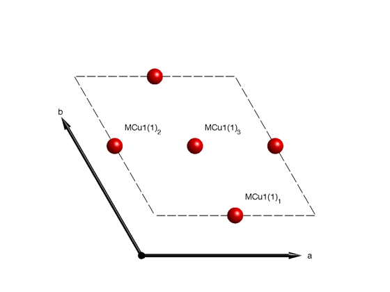
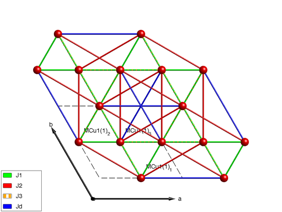
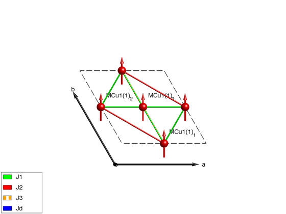
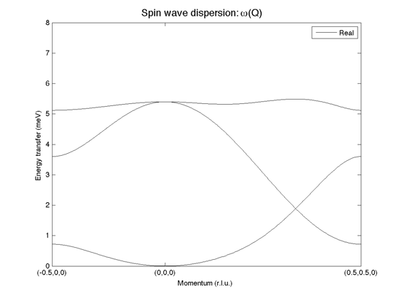
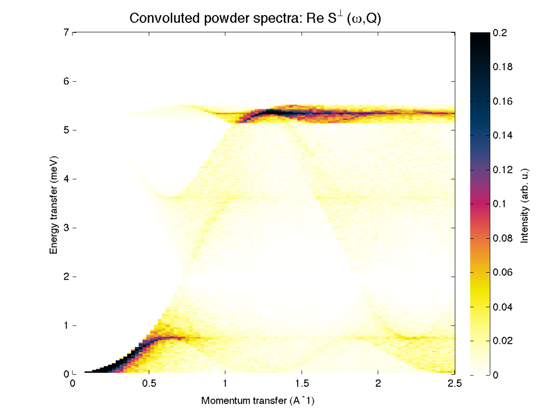

Contents
Ferromagnetic kagome lattice
We create the kagome lattice with up to 4th neighbor interactions. The symmetry related atoms are denoted by MCu1(i)_j, where i is the index of independent atomic positions, j is the index of the generated atomic positions of the i-th independent position.
kagome4 = sw; kagome4.fileid(0) kagome4.genlattice('lat_const',[6 6 40],'angled',[90 90 120],'sym','P -3'); kagome4.addatom('r', [1/2 0 0],'S', 1,'label','MCu1','color','r'); display('Atomic positions as columns:') kagome4.atom.r plot(kagome4)
Atomic positions as columns:
ans =
0.5000 0 0.5000
0 0.5000 0.5000
0 0 0
 Define Hamiltonian
We add couplings up to 4th neighbor interactions. If the generation of the bond tables would depend on distance, J3 and Jd would be equivalent. However using the 'P -3' space group the two type of bonds are inequivalent, as physically expected in real systems (J3 goes through an intermediate magnetic atom, while Jd is not).
kagome4.gencoupling('maxDistance',7); display('Rows: dlx, dly, dlz, at1, at2, idx, ma1, ma2, ma3') kagome4.couplingtable.table kagome4.coupling display('Bond vectors (first three rows) and bond distances') kagome4.couplingtable.bondv kagome4.addmatrix('label','J1','value',-1.00,'color','g') kagome4.addmatrix('label','J2','value', 0.10,'color','r') kagome4.addmatrix('label','J3-','value', 0.00,'color','orange') kagome4.addmatrix('label','Jd','value', 0.17,'color','b') kagome4.addcoupling('J1',1); kagome4.addcoupling('J2',2); kagome4.addcoupling('Jd',3); kagome4.addcoupling('J3-',4); plot(kagome4,'range',[2 2 1],'zoom',-0.8)
Rows: dlx, dly, dlz, at1, at2, idx, ma1, ma2, ma3
ans =
Columns 1 through 6
1 0 -1 0 0 0
0 0 0 0 -1 1
0 0 0 0 0 0
3 1 2 3 1 2
2 3 1 2 3 1
1 1 1 1 1 1
0 0 0 0 0 0
0 0 0 0 0 0
0 0 0 0 0 0
Columns 7 through 12
1 0 -1 0 -1 1
-1 1 0 0 -1 1
0 0 0 0 0 0
1 2 3 1 2 3
2 3 1 2 3 1
2 2 2 2 2 2
0 0 0 0 0 0
0 0 0 0 0 0
0 0 0 0 0 0
Columns 13 through 18
1 0 -1 0 -1 1
0 1 -1 1 -1 0
0 0 0 0 0 0
1 2 3 1 2 3
1 2 3 1 2 3
3 3 3 4 4 4
0 0 0 0 0 0
0 0 0 0 0 0
0 0 0 0 0 0
Columns 19 through 21
1 0 -1
0 1 -1
0 0 0
2 3 1
2 3 1
5 5 5
0 0 0
0 0 0
0 0 0
ans =
dl: [3x21 int32]
atom1: [3 1 2 3 1 2 1 2 3 1 2 3 1 2 3 1 2 3 2 3 1]
atom2: [2 3 1 2 3 1 2 3 1 2 3 1 1 2 3 1 2 3 2 3 1]
idx: [1 1 1 1 1 1 2 2 2 2 2 2 3 3 3 4 4 4 5 5 5]
mat_idx: [3x21 int32]
Bond vectors (first three rows) and bond distances
ans =
Columns 1 through 7
0.5000 0 -0.5000 -0.5000 0 0.5000 0.5000
0 0.5000 -0.5000 0 -0.5000 0.5000 -0.5000
0 0 0 0 0 0 0
3.0000 3.0000 3.0000 3.0000 3.0000 3.0000 5.1962
Columns 8 through 14
0.5000 -1.0000 -0.5000 -0.5000 1.0000 1.0000 0
1.0000 -0.5000 0.5000 -1.0000 0.5000 0 1.0000
0 0 0 0 0 0 0
5.1962 5.1962 5.1962 5.1962 5.1962 6.0000 6.0000
Columns 15 through 21
-1.0000 0 -1.0000 1.0000 1.0000 0 -1.0000
-1.0000 1.0000 -1.0000 0 0 1.0000 -1.0000
0 0 0 0 0 0 0
6.0000 6.0000 6.0000 6.0000 6.0000 6.0000 6.0000
 Magnetic structure
For strong FM 1str neighbour and weak further neighbor interaction the ground state is ferromagnetic.
kagome4.genmagstr('mode','helical','k',[0 0 0],'n',[0 1 0],'S',[0 1 0]); display('Magnetic structure with spins 1 2 ... as columns, xyz as rows:') kagome4.mag_str kagome4.mag_str.S display('Ground state energy (meV/spin)') kagome4.energy plot(kagome4)
Magnetic structure with spins 1 2 ... as columns, xyz as rows:
ans =
N_ext: [1 1 1]
k: [0 0 0]
S: [3x3 double]
n: [0 1 0]
ans =
0 0 0
1 1 1
0 0 0
Ground state energy (meV/spin)
ans =
-1.6300
 Spin wave dispersion
kag4Spec = kagome4.spinwave({[-1/2 0 0] [0 0 0] [1/2 1/2 0] 200},'hermit',false);
kag4Spec = sw_neutron(kag4Spec);
kag4Spec = sw_egrid(kag4Spec,'Evect',linspace(0,6.5,100)) ;
sw_plotspec(kag4Spec,'mode',1,'axLim',[0 8],'colorbar',false,'colormap',[0 0 0])
 Powder averaged spectrum
kag4Pow = kagome4.powspec(linspace(0,2.5,100),'Evect',linspace(0,7,250),'nRand',1000,'hermit',false); figure; sw_plotspec(kag4Pow,'axLim',[0 0.2],'colorbar',true)
Written by Bjorn Fak & Sandor Toth 06-June-2014